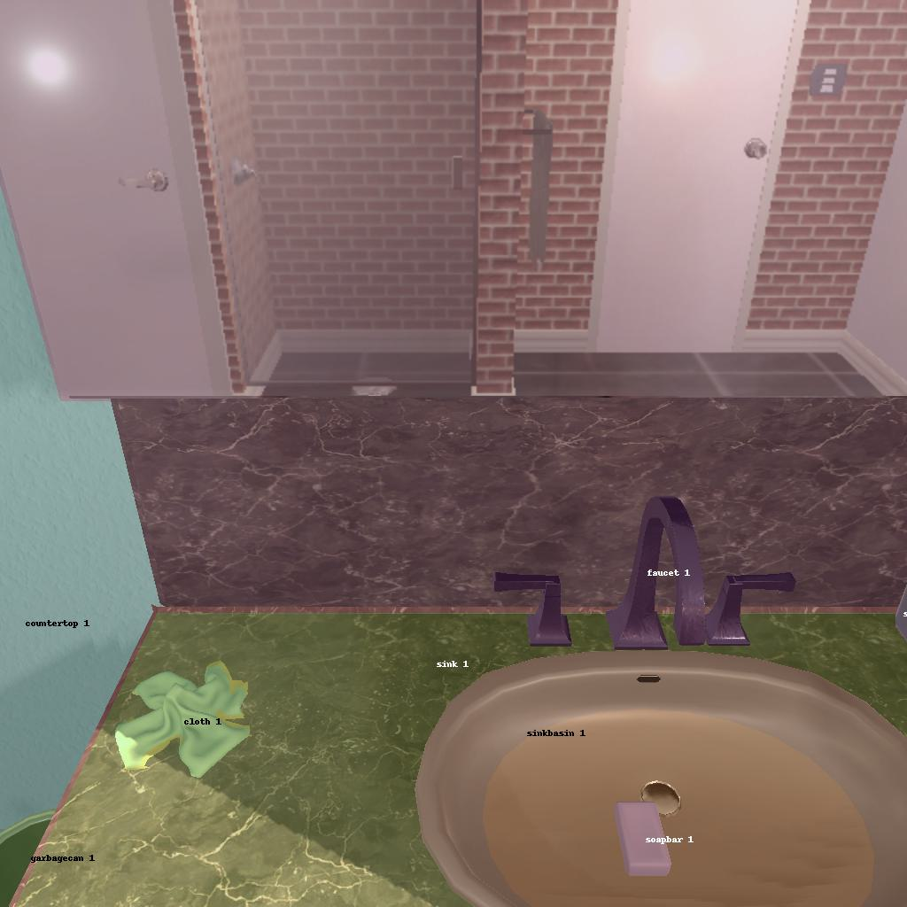

---------------------------------------------------------task: 27---------------------------------------------------------
--------------------------------------------------------------------------------------------------------------------------------------------------------------------
--------------------------------------------------------------------------------------------------------------------------------------------------------------------
Step:--------------------------------------------------------------------------6-------------------------------------------------------------------------------
----------------------------------------
VLM Prompt:
Image1:
Image2:
Image3:
**Instruction**
1. Analyze the provided image to identify all visible household objects, focusing on those relevant to the task description "find two soapbottle and put them in garbagecan."
2. Use the analysis of the image and the task hint "The agent must find an object of the desired type, pick it up, find the correct location to place it, put it down there, then look for another object of the desired type, pick it up, return to previous location, and put it down there with the other object." to answer the question: what is the most reasonable action in the choices for the task description "find two soapbottle and put them in garbagecan"?
4. Decide and write the answer using the template: The answer is: (i): , where i is the real number. If there is no desired object in the image, search every place based on **Initial Observation** to find the object. And if no one is exactly correct, choose a similar answer.
**Initial Observation**
You are in the middle of a room. Looking quickly around you, you can see countertop (1), sinkbasin (1-2), sink (1-2), garbagecan (1), drawer (1-2), toilet (1), handtowelholder (1)
**Answer Choices**
(1): go to sink 1
(2): go to garbagecan 1
(3): go to drawer 1
(4): go to drawer 2
(5): go to sink 2
(6): go to sinkbasin 2
(7): go to toilet 1
(8): go to handtowelholder 1
(9): take faucet 1 from sinkbasin 1
(10): take cloth 1 from sinkbasin 1
(11): take soapbar 1 from sinkbasin 1
(12): take soapbottle 1 from sinkbasin 1
(13): examine sinkbasin 1
**Answer**
Let's think step by step by following the instructions.
----------------------------------------
----------------------------------------
Original Response:
The task is to find two soapbottles and put them in the garbagecan. Looking at the images provided, we can identify various objects, but we need to focus on the soapbottles and garbagecan for the task at hand.
Image 1 shows two soapbottles labeled as "soapbottle 1" and "soapbottle 3" on the countertop near sink 1 and sink 2, respectively. Additionally, there is a garbagecan labeled as "garbagecan 1" under the countertop near drawer 1.
Based on the Initial Observation, we are in the middle of the room and can see all the relevant objects for our task, including the soapbottles and garbagecan.
The most reasonable actions to complete the task would be to go to the soapbottles, take them, and then go to the garbagecan to put them in. Since Image 1 shows the location of the soapbottles and garbagecan, we can proceed with these actions.
The answer is: (12): take soapbottle 1 from sinkbasin 1. After taking soapbottle 1, the next reasonable action would be to go to sink 2 to take soapbottle 3 and then go to garbagecan 1 to put them in. However, the choices provided do not include taking soapbottle 3 or going to garbagecan 1 directly after taking soapbottle 1. Since we can only choose one action at a time, we start with taking the first soapbottle.
----------------------------------------
----------------------------------------
>>> Refine Original VLM Response and Get Pure Action: take soapbottle 1 from sinkbasin 1
----------------------------------------
-----------------------------------------------------------------
Running time: 17.386720895767212 seconds
Total Money: 17.4315
-----------------------------------------------------------------
-----------------------------------------------------------------
Text Observation:You pick up the soapbottle 1 from the sinkbasin 1.
-----------------------------------------------------------------
UNSUCCEED